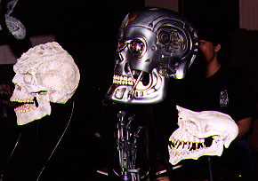
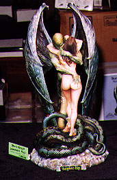
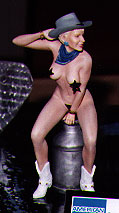
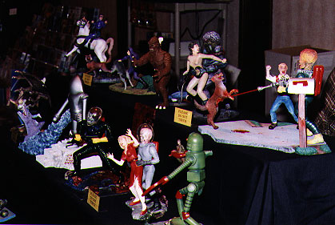
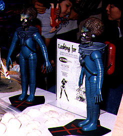
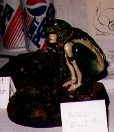
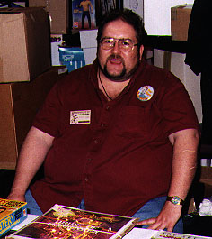
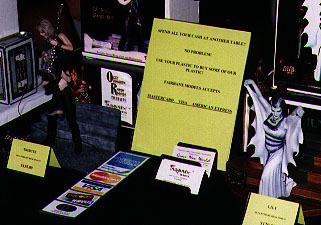

Review by:
Larry Brackney (zeiram@mail.hsonline.net)
 he
'97 Spring show season got off to a rollicking start with
Wonderfest! Those skeptics who thought this year's show would flop w/out a
big name like Ray Harryhausen, were soundly thumped by the packed dealer
room, heavy attendance, and record-setting number of quality contest
entries. Here are just a few of the show highlights for those who couldn't
make it, or for those who just want to remember the fun we had!
he
'97 Spring show season got off to a rollicking start with
Wonderfest! Those skeptics who thought this year's show would flop w/out a
big name like Ray Harryhausen, were soundly thumped by the packed dealer
room, heavy attendance, and record-setting number of quality contest
entries. Here are just a few of the show highlights for those who couldn't
make it, or for those who just want to remember the fun we had!
 |
| At Wonderfest, our dealers are ready to serve YOU! (Literally!) |
First, let me say what a trip it was meeting so many grems at the show. It's always great seeing gremlins at the shows, but this was the biggest batch yet! There's a real sense of belongingness whenever gremlins get together. If you haven't been a part of this at one of the big figure kit shows, I HIGHLY recommend that you try to attend one! The kits are great, the friends are better! With that said, let's get to the meat of things. What's new in '97?
Maybe I'm getting jaded, but it seems to me that the hobby's getting just a little glutted these days. Lots of companies are cranking out the kits for your money, but the number of exceptional sculptures and bargains is still fairly modest IMHO. I really got a sense of this while cruising around the dealer room. So many new releases, but only a few real gems. Here are some of the new releases that made an impact on me, in no particular order.
Greyzone has become a true fixture in the industry. It's a table you EXPECT to see at all of the big shows. Likewise, you EXPECT to see at least one or two cool new skulls that Luis has unearthed for our pleasure. Well, I'm sad to say... Just kidding! Luis is back for '97 with a vengeance and two new skulls: a Klingon and a GREMLIN! Luis once again unleashed his imagination and came up w/ a gorgeous interpretation of a Klingon's brainbox. Gremlin fans will be delighted with his 1:1 rendition of the Gremlin skull as well. (I can already see Denis getting out his checkbook!)
|  |
| New bones! Greyzone digs up a Klingon and GREMLIN skull! |
Wondering what Matt McWhirt's been up to? Matt's decided to close the doors for good at "Shape of Things," and is embarking on a new venture called "Windshear." Windshear continues Matt's tradition of excellent castings with kits from his new comic "The XBI" (Extraterrestrial Bureau of Investigation.) Matt was showing off a kit of his alien character Vox Rylock, as well as a cool XBI-ified Nestor the Wonderfestor. For those who prefer their resin delights in a more realistic vein, look no further than Robyn Hood, a gorgeous 1:6 rendition of Sherwood's feminine righter of wrongs. Also on display at the Windshear table was a way cool ID4-based hive queen.
Matt was in good company with Steve and Melinda of Cellar Cast right next door. Last year's Demoness kit was available along with the Boris kits. Oh, did I mention that Steve's finished Vampire's Kiss? YOW! Quite possibly the bargain of the show IMO. If you thought the first two Boris kits were nice, you ain't seen nuthin' yet. As if the composition and sculpting aren't great enough, terrific parting enables sectional painting, and the seamlines are nearly invisible. This will be one of the hottest tickets of the '97.
|  |
| Cellar Cast's INCREDIBLE Vampire's Kiss |
Nightlife was showing off some great new items including their ever expanding selection of blanks. (I'm delighted to see different scales being offered, but how's about some realistic proportioning on the female blanks guys...) Bladerunner fans would be pleased with the new Deckard kit being offered. The likeness to Harrison Ford was quite nice, and the pose is solid. Pair it up w/ that new Priss kit, and you'll be on your way!
Jimmy Flintstone has made giant strides in the past year since I last saw his stuff. Several of the new Testor's kits (i.e. King Thutmose) were being shown, and I was REALLY impressed by how much his casting quality has improved. Jimmy's always offered neat sculptures at a fair price, but the casting quality left a bit to be desired. He's now using a different resin, and is apparently taking greater pains to align molds and cast under pressure. The results are really terrific. If Testor's distributes these new kits properly, we may be seeing the figure kit hobby getting some really favorable exposure.
The Diceman! Our own Ed Bowkley made the trek from the coast to share his wares with us 'po midwestern modelers. Ed's really found his nitch in 60's television characters, and is plumbing the depths. His John Astin, Gomez kit was the real standout here with a clever pose and a great likeness. Herman Munster, Maxwell Smart, and a cool Don Knotts Barney kit were on hand as well.
 |
| The latest resin fare from Ed "Jersey-boy" Bowkley |
Just in case you didn't get enough East Coast hospitality from Ed, you could swing right next door and pay Al Reboiro of Python Press a call! Al was showing off his new Connery James Bond kit based on artwork from Thunderball. It's really a distinctive pose, and Bond fans will want to give it serious consideration. Al's other pieces, like the Bowery Boys and a new Munsters "Spot" were up for grabs as well.
Janus was back again this year, with their traditional kit debut. This time out is Thomas Kuntz's beautiful White Zombie kit featuring Bela Lugosi. No one seems to capture Lugosi like Kuntz, and with the imminent (finally!) release of his Dracula sculpture from Dark Horse, Lugosi fans have TWO reasons to rejoice! Janus continued another tradition by offering teasers of their upcoming releases. Next year, expect to see Chris Walas' Hideous Sun Demon diorama. Janus continues to display a sculpture of Karloff as the mummy, complete with sarcophogus, but there's no release date in sight. Some VERY preliminary sculpting on the Phantom kit was shown, but that was about it.
 |
| Janus' latest masterpiece, White Zombie |
Shawn Nagle and Eric Ko were showcasing all of the great Polydata Star Wars figures. These are great pieces to pop together and display, but they're also great sculptures for those who want to take a swag at repainting them. Shawn was also showing off some fantastic new pieces including a female kit (still in progress I believe), a hellhound, and an awesome Godzillasaurus.
In case you couldn't get enough of Shawn's work at his own table, you could always pop over to MiM's booth for a look at his new Harryhausen Sabretooth or an intense kit of Blizzard from the Primal Rage video game. MiM's still working the Harryhausen licenses pretty hard, but they were also showing off their Nemo's Daughter and Barb Wire kits too.
Directly opposite MiM's table was Paul at the Character Shop! Paul seemed to have a fun time meeting many of the gremlins that showed up, and offered a hospitality suite on Friday night to present some new kits he's dealing from the UK: the infamous "Norris You're Flippin' Kidding," a hyper-detailed Raptor trophy mount, and one of the best likenesses I've ever seen of Jack Nicholson - in 1:1 scale no less!
Terry Webb and David Fisher were on-hand from AFM to glad-hand w/ the masses, and David was doing double-duty by debuting his brand new ModelMania video. For those who passed up the first two videos because they seemed "too basic," it's time to hop on the bus. Volume 3 is the real deal, with more solid material than you can shake a stick at. If you find yourself wondering how the heck Fisher pulled off the Guillotina cover on the next AFM, BUY THE TAPE.
The ever-present Gordy Dutt was firmly planted in the Kitbuilder's booth, showing off his latest issue of the magzine, as well as a prototype for the first ever Kitbuilder's kit! The kit is designed by Azimuth's Mike James, so most folks have a fair idea of what to expect, however Gordy's gone and tossed a curve ball by allowing the piece to function as a pencil/brush holder or a bookend. (Presumably for keeping all those back-issues of KB from flopping over!)
Fred and Silvia DeRuvo flew in from California to represent Modeler's Resource and to debut their new Sitting Pretty kit. The kit proved quite popular w/ female kit collectors, who were wowed by dueling paint-jobs from Tom and Jerry. If Tom and Jerry's table looked a little bare this year, it was only because they had so many things on display at OTHER people's tables! Tom's dino buildups at the CM Studio's table were something special.
|  |
| Gee Fred, I can't quite put my finger on it. She looks awfully familiar! :) |
CM Studio's table was only the tip of the iceberg for dino fans. Saurian studios was also on-hand to display their excellent museum-quality dinosaur displays. These looked terrific sitting right next to Bill Wieger's mammoth dinosaurs. Bill was sharing his 4-5' long Triceratops sculpture along with a pair of enormous T-Rex sculptures he did. While those weren't for sale, he apparently decided to sell his one-of-a-kind Vermithrax at the show. Sigh...
Action Hobbies continued to expand their line of Mars Attacks kits, a popular subject at this year's show. This year saw the addition of a Destroying a Dog diorama, as well as a great Dave Cockrum-designed aquatic dinosaur. A real treat for me was Action Hobbies' Martian Warrior resin kits cast from original stop-motion props designed for Mars Attacks. I snagged one quickly, and you should too if you are as much a fan as I. (I'm frankly surprised to see that Topp's and/or Warner Bros. haven't served these folks with C&D papers after exploiting the property for several years now.)
|  |
| The Martians are attacking! Action Hobbies keeps crankin'out the MA kits! |
|  |
| Action Hobby's pulls from the ORIGINAL stop-motion puppets! |
And while we're talking about Mars Attacks, Sassy's Satellite was showing off a terrific 1:6 female Martian spy, complete with a choice of Martian or Lisa Marie heads. (Sadly, the Spookster got to her before I did!) Sassy's was also selling a 1:1 Martian bust based on the Topp's comics, maybe the next best thing to the full-sized nude Martian that sold long before the dealer room even opened. (Say, shouldn't that nude Martian have been displayed in the mature kits room?)
 |
| Sassy's Martian babe, dressed to kill |
Fantasy World has continued to expand their line. They've apparently been busy since last year, having added a bunch of new kits to their original line-up. New offerings included some interesting Frog and Snail women kits that reminded me a lot of Zotz's Orithya. Their Dr. Nefarious kit has been reworked slightly and is now offered emerging from a barroque picture frame as a Dorian Grey kit. Cool! They were also debuting a new Hitchcock kit, which boasted a terrific likeness, a neat little 20,000 Leagues diver diorama, and several other smaller pieces.
|  |
| A neat Frog woman kit, in the same vein as Zotz releases |
Anthony Taylor was playing Jack-of-all-Trades at the Weird Worx/Fashion Victim booth. No new kits from WW, but Anthony was kind enough to debut the brand new Bernie Wrightson vinyl Zombie kit for Sideshow. This kit was a real bargain IMO, and a treat for fans of Wrightson's living dead. For those that purchased the "Bury Christmas" kit, I will warn you that the base has been recycled. Anthony was also displaying a range of neat pewter jewelry (including a wild giger-esque talon/ring) and some great t-shirts w/ designs ranging from classic horror to Soryama artwork.
|  |
| Anthony Taylor stands guard at the Weird Worx/Fashion Victim booth |
GEOmetric was displaying their upcoming Predator vinyl kit. Like their other recent vinyl offerings, I suspect it will make fans quite happy, in terms of quality and cost. Geo is continuing to import Max Factory kits and was running a show special on the pair of Wang Guyver and Guyver Zoanid kits. They've apparently dropped the 1:4 Pumpkinhead bust from the lineup, but have added several new classic horror busts including the Phantom. The Nosferatu is still available, but with a simple "post" base to match the other three busts in the series.
Fairbanx models seemed to be doing well with their Madame Quazimodo kit, as well as the recent Ozzie/Rhodes "Tribute" kit. For those that had asked about the sculpting quality on this one, Rick Wyatt has delivered again. You won't be disappointed.
|  |
| A ROCKIN' Tribute from Fairbanx! |
Mental Mischefs was there immediately next to the Fairbanx table. Of note, they were offering a full-sized Gremlin trophy plaque! (Put that checkbook away Denis!) Tick fans were amused to see a prototype of a "little wooden boy" kit at the table. (Does anyone else think this kit WON'T be cast in resin?) Also, present was a thin resin cast "shadow" of the MST3K crew that you could stick on your TV screen! They had several sizes to choose from based on your screen size. Very cool!
Of course this is only a partial list of all the companies that were selling kits at the show. Retailers like Puff N Stuff and Kitboy were also on hand with huge selections of kits, toys, and sundry collectibles. The anime selection at W'fest continues to grow, but I'll defer to Lumraptor's expert commentary on this genre. I will say that, despite W'fest's "anti-recast" policy, I found it interesting that many of the tables dealing anime kits were selling recasts. Likewise, there were many tables making a brisk business of selling bootleg video tapes.
Wonderfest '97 set new records in terms of the quantity and quality of the contest entries. This year, over 290 (!) entries competed for top honors. It was truly a spectacle to see so many wonderful pieces of artwork on display, and I was moved to offer my sympathy to David Fisher, whom I knew would be suffering through the judging process on Sunday morning. I'm not going to single out any entries in this review, because there are just too many that are worthy of comment to list here. Rather, I'll let the pictures that will no-doubt accompany this article speak for themselves.
Most people who know me, are probably expecting me to say SOMETHING about the issue of censorship at the show and in the contest. First, the issue of nude kits being displayed at dealer tables was handled rather well this year. Most dealers made a real attempt to display their goods carefully. As many may know, there was an attempt made to address the issue of censorship in the contest by offering a "mature kit room," for display of R-rated (or X-rated as it turned out) kits. I'd like to publically applaud the organizers of W'fest for allowing such a room to exist. I know it was not a popular choice for a variety of reasons, but I want to express my appreciation to the staff for coming up with A compromise.
If that's all there was to the show, it'd still have been terrific, but there's more! A horde of ravenous, resin grubbing, gremlins! This was the first time that I had seen so many gremlins in one place and time. MMP3 was a kick, because there were a fair number of grems on hand, but W'fest eclipsed that experience entirely. There were always people to hang out with; at the show, in rooms, and at meals. You could literally go anywhere in the dealer room and see a friendly/familiar face, and it's only going to get better with time. If you haven't had the opportunity to go to one of the "big" figure kit shows, you owe it to yourself, not just to see all the great kits, but to meet a great bunch of people.
 |
| Rock n Roll Kirby IS Bad Tabitha! Lock up your daughters folks! |
 |
| L2R: Bill "Chinxy" Jenks, Ed Bowkley, Jennifer & Ken Stevens, and Kevin "Lumraptor" O'Connell |
 |
| L2R: Jason Walker, Tom Buban, and Lance "Tatboy" Woods |
 |
| Kirby "congratulates" Jeff Stringer after winning an award! |
 |
| The Terrible Texas Trio! L2R: "Dangerous" Dan Perez, Tom "Servo" Seiler, and "the Spookster," Michael Allen |
 |
| Tommy Ellis holds down the fort while his no-good buddy Clutch rocks out w/ KISS! |
That's it for W'fest '97. Nothing left but to balance my sickly checkbook, start cleaning up the kits, and get ready for MMP4!
The Gremlins in the Garage webzine is a production of Firefly Design. If you have any questions or comments please get in touch.
Copyright © 1994-1997 Firefly Design.